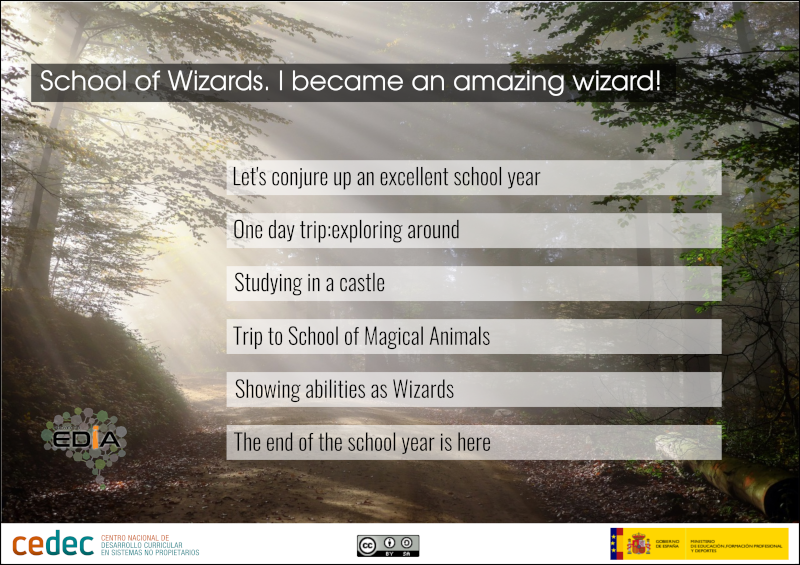

2
Click on the titles in order to know information about the learning pathway.
{"typeGame":"Mapa","instructions":"","showMinimize":false,"showActiveAreas":false,"author":"","url":"/previews/_home_app_exe_config_formacion_intef_es_aulavirtual_7944_fs_plantiga_magos_2.png","authorImage":"Image created from Pxhere CC0","altImage":"https://pxhere.com/en/photo/1151523 ","itinerary":{"showClue":false,"clueGame":"","percentageClue":40,"showCodeAccess":false,"codeAccess":"","messageCodeAccess":""},"points":[{"id":"p661596664580","title":"Let's conjure up an excellent school year!","type":2,"url":"","video":"","x":0.28669410150891633,"y":0.283495145631068,"x1":0.8998628257887518,"y1":0.33980582524271846,"footer":"","author":"","alt":"","iVideo":0,"fVideo":0,"eText":"","iconType":1,"question":"","question_audio":"","toolTip":"","link":"","map":{"id":"a661596664580","pts":[{"id":"p112611938779","title":"","type":0,"url":"","video":"","x":0,"y":0,"x1":0,"y1":0,"footer":"","author":"","alt":"","iVideo":0,"fVideo":0,"eText":"","iconType":0,"question":"","question_audio":"","toolTip":"","link":"","color":"#000000","fontSize":"14","map":{"id":"a112611938779","url":"","alt":"","author":"","pts":[]},"slides":[{"id":"s112611938779","title":"","url":"","author":"","alt":"","footer":""}],"activeSlide":0}],"url":"","alt":"","author":"","active":0},"slides":[{"id":"s661596664580","title":"","url":"","author":"","alt":"","footer":""}],"activeSlide":0,"audio":"","color":"#000000","fontSize":"14"},{"id":"p77964004458","title":"One day trip: exploring around","type":2,"url":"","video":"","x":0.2839506172839506,"y":0.3786407766990291,"x1":0.9039780521262003,"y1":0.42718446601941745,"footer":"","author":"","alt":"","iVideo":0,"fVideo":0,"eText":"","iconType":1,"question":"","question_audio":"","toolTip":"","link":"","map":{"id":"a77964004458","pts":[{"id":"p278543386926","title":"","type":0,"url":"","video":"","x":0,"y":0,"x1":0,"y1":0,"footer":"","author":"","alt":"","iVideo":0,"fVideo":0,"eText":"","iconType":0,"question":"","question_audio":"","toolTip":"","link":"","color":"#000000","fontSize":"14","map":{"id":"a278543386926","url":"","alt":"","author":"","pts":[]},"slides":[{"id":"s278543386926","title":"","url":"","author":"","alt":"","footer":""}],"activeSlide":0}],"url":"","alt":"","author":"","active":0},"slides":[{"id":"s77964004458","title":"","url":"","author":"","alt":"","footer":""}],"activeSlide":0,"audio":"","color":"#000000","fontSize":"14"},{"id":"p751004492024","title":"Studying in a castle","type":2,"url":"","video":"","x":0.28669410150891633,"y":0.47184466019417476,"x1":0.9053497942386831,"y1":0.537864077669903,"footer":"","author":"","alt":"","iVideo":0,"fVideo":0,"eText":"","iconType":1,"question":"","question_audio":"","toolTip":"","link":"","map":{"id":"a751004492024","pts":[{"id":"p1543265882654","title":"","type":0,"url":"","video":"","x":0,"y":0,"x1":0,"y1":0,"footer":"","author":"","alt":"","iVideo":0,"fVideo":0,"eText":"","iconType":0,"question":"","question_audio":"","toolTip":"","link":"","color":"#000000","fontSize":"14","map":{"id":"a1543265882654","url":"","alt":"","author":"","pts":[]},"slides":[{"id":"s1543265882654","title":"","url":"","author":"","alt":"","footer":""}],"activeSlide":0}],"url":"","alt":"","author":"","active":0},"slides":[{"id":"s751004492024","title":"","url":"","author":"","alt":"","footer":""}],"activeSlide":0,"audio":"","color":"#000000","fontSize":"14"},{"id":"p1428010133657","title":"Trip to school of magical animals","type":2,"url":"","video":"","x":0.289437585733882,"y":0.5650485436893203,"x1":0.897119341563786,"y1":0.629126213592233,"footer":"","author":"","alt":"","iVideo":0,"fVideo":0,"eText":"","iconType":1,"question":"","question_audio":"","toolTip":"","link":"","map":{"id":"a1428010133657","pts":[{"id":"p928618698236","title":"","type":0,"url":"","video":"","x":0,"y":0,"x1":0,"y1":0,"footer":"","author":"","alt":"","iVideo":0,"fVideo":0,"eText":"","iconType":0,"question":"","question_audio":"","toolTip":"","link":"","color":"#000000","fontSize":"14","map":{"id":"a928618698236","url":"","alt":"","author":"","pts":[]},"slides":[{"id":"s928618698236","title":"","url":"","author":"","alt":"","footer":""}],"activeSlide":0}],"url":"","alt":"","author":"","active":0},"slides":[{"id":"s1428010133657","title":"","url":"","author":"","alt":"","footer":""}],"activeSlide":0,"audio":"","color":"#000000","fontSize":"14"},{"id":"p1465025334889","title":"Showing abilities as wizards","type":2,"url":"","video":"","x":0.28532235939643347,"y":0.6563106796116505,"x1":0.9039780521262003,"y1":0.7242718446601941,"footer":"","author":"","alt":"","iVideo":0,"fVideo":0,"eText":"","iconType":1,"question":"","question_audio":"","toolTip":"","link":"","map":{"id":"a1465025334889","pts":[{"id":"p163094278133","title":"","type":0,"url":"","video":"","x":0,"y":0,"x1":0,"y1":0,"footer":"","author":"","alt":"","iVideo":0,"fVideo":0,"eText":"","iconType":0,"question":"","question_audio":"","toolTip":"","link":"","color":"#000000","fontSize":"14","map":{"id":"a163094278133","url":"","alt":"","author":"","pts":[]},"slides":[{"id":"s163094278133","title":"","url":"","author":"","alt":"","footer":""}],"activeSlide":0}],"url":"","alt":"","author":"","active":0},"slides":[{"id":"s1465025334889","title":"","url":"","author":"","alt":"","footer":""}],"activeSlide":0,"audio":"","color":"#000000","fontSize":"14"},{"id":"p1288585418824","title":"The end of the school year is here","type":2,"url":"","video":"","x":0.2784636488340192,"y":0.7533980582524272,"x1":0.8998628257887518,"y1":0.8077669902912621,"footer":"","author":"","alt":"","iVideo":0,"fVideo":0,"eText":"","iconType":1,"question":"","question_audio":"","toolTip":"","link":"","map":{"id":"a1288585418824","pts":[{"id":"p1130547479156","title":"","type":0,"url":"","video":"","x":0,"y":0,"x1":0,"y1":0,"footer":"","author":"","alt":"","iVideo":0,"fVideo":0,"eText":"","iconType":0,"question":"","question_audio":"","toolTip":"","link":"","color":"#000000","fontSize":"14","map":{"id":"a1130547479156","url":"","alt":"","author":"","pts":[]},"slides":[{"id":"s1130547479156","title":"","url":"","author":"","alt":"","footer":""}],"activeSlide":0}],"url":"","alt":"","author":"","active":0},"slides":[{"id":"s1288585418824","title":"","url":"","author":"","alt":"","footer":""}],"activeSlide":0,"audio":"","color":"#000000","fontSize":"14"}],"isScorm":0,"textButtonScorm":"Guardar la puntuación","repeatActivity":false,"textAfter":"","evaluation":0,"selectsGame":[{"typeSelect":0,"numberOptions":4,"quextion":"","options":["","","",""],"solution":"","solutionWord":"","percentageShow":35,"msgError":"","msgHit":""}],"isNavigable":true,"showSolution":true,"timeShowSolution":3,"version":2,"percentajeIdentify":100,"percentajeShowQ":100,"percentajeQuestions":100,"autoShow":false,"autoAudio":true,"optionsNumber":0,"evaluationF":false,"evaluationIDF":"","id":"202446182926-120","order":"","msgs":{"msgSubmit":"Submit","msgIndicateWord":"Provide a word or phrase","msgClue":"Cool! The clue is:","msgErrors":"Errors","msgHits":"Hits","msgScore":"Score","msgMinimize":"Minimize","msgMaximize":"Maximize","msgFullScreen":"Full Screen","msgNoImage":"No picture question","msgSuccesses":"Right! | Excellent! | Great! | Very good! | Perfect!","msgFailures":"It was not that! | Incorrect! | Not correct! | Sorry! | Error!","msgTryAgain":"You need at least %s% of correct answers to get the information. Please try again.","msgEndGameScore":"Please start the game before saving your score.","msgScoreScorm":"The score can't be saved because this page is not part of a SCORM package.","msgPoint":"Point","msgAnswer":"Answer","msgOnlySaveScore":"You can only save the score once!","msgOnlySave":"You can only save once","msgInformation":"Information","msgYouScore":"Your score","msgOnlySaveAuto":"Your score will be saved after each question. You can only play once.","msgSaveAuto":"Your score will be automatically saved after each question.","msgSeveralScore":"You can save the score as many times as you want","msgYouLastScore":"The last score saved is","msgActityComply":"You have already done this activity.","msgPlaySeveralTimes":"You can do this activity as many times as you want","msgClose":"Close","msgPoints":"points","msgPointsA":"Points","msgQuestions":"Questions","msgAudio":"Audio","msgAccept":"Accept","msgYes":"Yes","msgNo":"No","msgShowAreas":"Show active areas","msgShowTest":"Show questionnaire","msgGoActivity":"Click here to do this activity","msgSelectAnswers":"Select the correct options and click on the 'Reply' button.","msgCheksOptions":"Mark all the options in the correct order and click on the 'Reply' button.","msgWriteAnswer":"Write the correct word o phrase and click on the 'Reply' button.","msgIdentify":"Identify","msgSearch":"Find","msgClickOn":"Click on","msgReviewContents":"You must review %s% of the contents of the activity before completing the questionnaire.","msgScore10":"Everything is perfect! Do you want to repeat this activity?","msgScore4":"You have not passed this test. You should review its contents and try again. Do you want to repeat this activity?","msgScore6":"Great! You have passed the test, but you can improve it surely. Do you want to repeat this activity?","msgScore8":"Almost perfect! You can still do it better. Do you want to repeat this activity?","msgNotCorrect":"It is not correct! You have clicked on","msgNotCorrect1":"It is not correct! You have clicked on","msgNotCorrect2":"and the correct answer is","msgNotCorrect3":"Try again!","msgAllVisited":"Great! You have visited the required dots.","msgCompleteTest":"You can do the test.","msgPlayStart":"Click here to start","msgSubtitles":"Subtitles","msgSelectSubtitles":"Select a subtitle file. Supported formats:","msgNumQuestions":"Number of questions","msgHome":"Home","msgReturn":"Return","msgCheck":"Check","msgUncompletedActivity":"Incomplete activity","msgSuccessfulActivity":"Activity: Passed. Score: %s","msgUnsuccessfulActivity":"Activity: Not passed. Score: %s","msgTypeGame":"Map"}}

The project is introduced to the students.
At the end, they will get a certificate of participation and a recognition of their outstanding abilities.
The students:
- Know vocabulary related to explorer trips (activities, material, landscape).
- express actions in the past with regular and irregular verbs.
- Learn to express strong obligation and necessity.
- Read and follow instructions.
- explain instructions to their classmates.
- Practice the pronunciation of must and mustn’t.
- know activities they could do if they attended an ordinary school.
1st mission: design a digital map for a day trip including tips to guarantee safety when exploring the area.
The students:
- know famous castles and their location.
- do descriptions using adjectives in comparative and superlative form.
- know mythical creatures and practice the pronunciation.
- review pronouns (subject, object, adjective possessive and possessive).
- know vocabulary related to ICT.
2nd mission: they have to record a podcast to avoid parents concern talking about the school of wizards comparing it centuries ago and now.
The students:
- know vocabulary related to activities to do in their free time
- debate, on the one hand, about having pets at home or not and, on the other hand, about buying or rescuing animals to have them as pets.
- learn how to take care about animals
- learn to express certainty, necessity, obligation and lack of obligation
- learn or will review animals’ body parts
3rd mission, in groups, they have to design a digital poster about a magical animal describing it and with information to learn how to take care of it.
The students:
- learn directions to make potions and to practice the pronunciation
- express measurements when making a potion
- make a cauldron with paper mache,
- know vocabulary related to with aromatic plants
- design a label for a potion
- reflect about the 2030 Agenda by creating a potion to grant a SDG
- express future intentions and plan
4th mission: They have to make a potion in order to meet at least one SDG
The students:
Final challenge: they have to design a digital scrapbook to help new students including ideas about things that maybe they will probably do.
Su navegador no es compatible con esta herramienta.